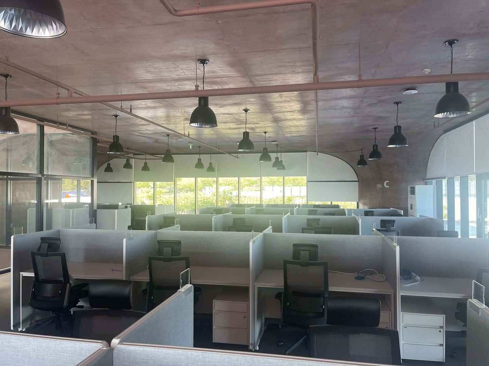
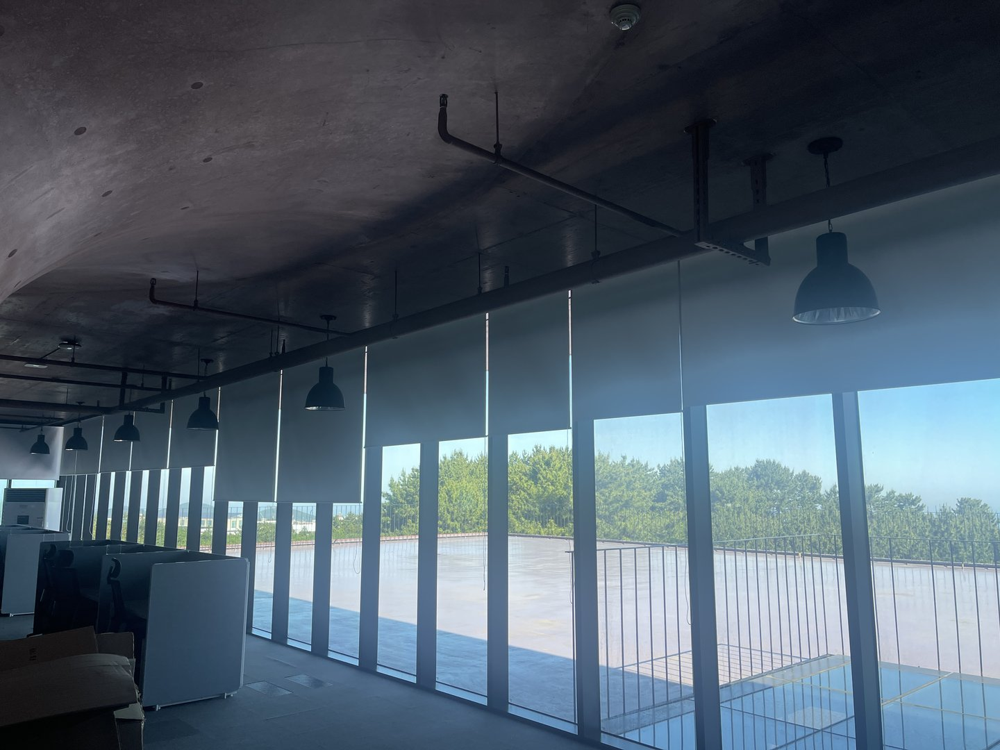
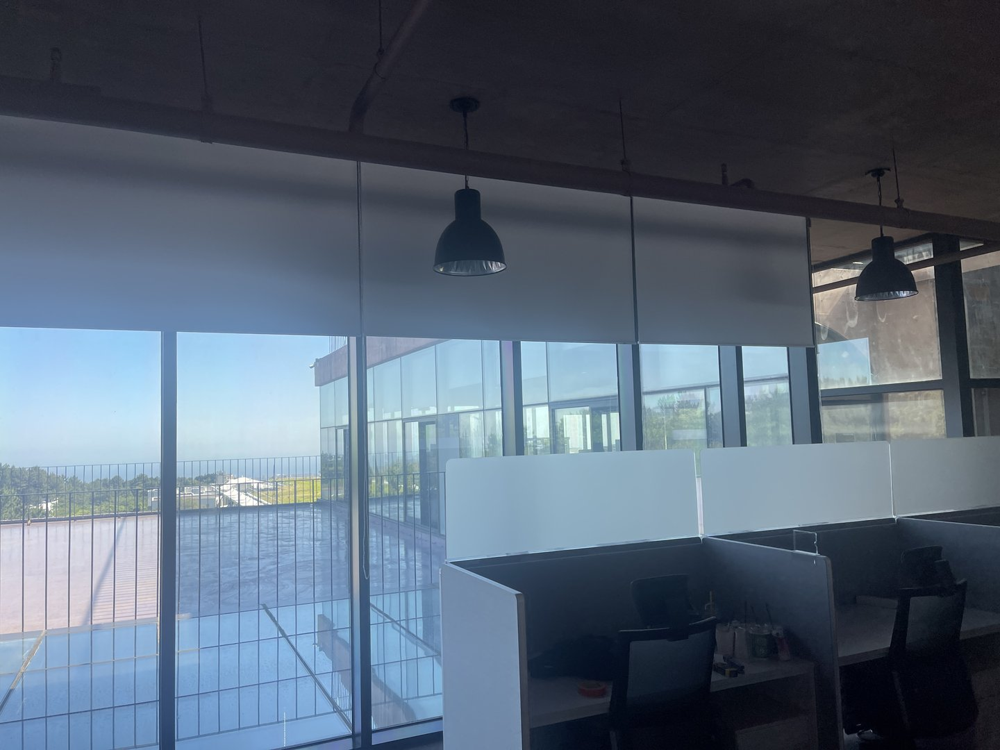
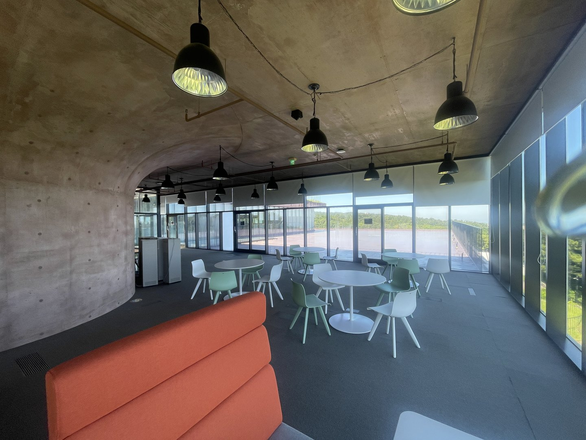

2026년 5월 30일 시공
영덕 사무실
화이트 암막 롤스크린 전관 시공후기

영덕에 있는 사무실 전관 시공입니다. 워크스테이션 구역과 창가 복도 라인, 테라스측, 라운지까지 창을 전부 화이트 암막 롤스크린으로 정리했습니다.
이 현장은 상담 때 사장님이 하신 말씀이 좀 특이했습니다. "눈부신 건 잡아야 하는데 바다가 안 보이면 안 됩니다." 사무실 창 이야기에 뷰가 먼저 나오는 경우는 흔하지 않습니다.
먼저 천장이 문제였습니다
실측하러 가서 제일 먼저 본 건 창이 아니라 천장이었습니다. 이 건물은 노출 콘크리트 볼트 천장입니다. 둥글게 휘어 내려오는 구조라 천장이 평평하지 않습니다.
롤스크린은 보통 창틀 안쪽이나 창 위쪽 벽, 아니면 천장에 브래킷을 박습니다. 그런데 여기는 천장이 곡면이라 천장 고정이 안 됩니다. 억지로 박으면 좌우 브래킷 높이가 미묘하게 달라지고, 축이 창과 평행이 안 됩니다. 축이 기울면 원단이 감길 때 한쪽으로 밀려 올라갑니다.
처음에는 티가 안 납니다. 몇 십 번 감았다 풀면 누적돼서 눈에 보이게 삐뚤어집니다. 그래서 창 상부와 벽면 구조를 하나하나 찾아서 잡았습니다.
아치 창은 축 높이가 전부입니다
두 번째 조건은 창 모양이었습니다. 창 상부가 아치입니다. 창은 곡선인데 롤스크린 축은 직선이라, 아치 어디쯤에 축을 두느냐가 통째로 인상을 결정합니다.
아치 꼭대기에 맞추면 축 양쪽 끝과 아치 곡선 사이에 초승달 모양 빈 곳이 생겨서 그리로 빛이 샙니다. 아치 아래로 충분히 내려 잡으면 빛은 잡히는데 창을 잡아먹어서 답답해집니다.
이번에는 아치의 가장 낮은 지점, 즉 직선 구간이 끝나는 높이를 기준으로 잡았습니다. 여기 잡으면 빛샘 없이 창 면적을 최대로 남깁니다.

여기에 문제가 하나 더 있었습니다. 이 라인은 같은 창이 옆으로 길게 반복됩니다. 창마다 아치 높이가 미세하게 다른데 각각에 맞춰 잡으면 축 높이가 들쭉날쭉해집니다. 실내에서는 잘 모르는데 밖에서 건물을 보면 그 층 창 라인이 물결처럼 보입니다.
그래서 구간별로 수평 기준선을 하나 정하고, 레이저 수평기를 벽 한 면에 쭉 쏘아 그 선에 브래킷을 전부 맞췄습니다.
완전 암막인데 화이트로 간 이유
"암막인데 흰색이면 빛이 새지 않나요?"라는 질문을 상담 때마다 받습니다. 안 샙니다. 암막 원단은 겉으로 보이는 색이 빛을 막는 게 아니라 원단 안쪽에 들어간 차광 코팅이 막습니다. 같은 등급이면 검정이든 화이트든 차광 성능이 거의 같습니다.
여기서 화이트를 고른 이유는 세 가지입니다.
첫째, 천장과 싸우지 않습니다. 천장이 노출 콘크리트라 이미 시선이 위로 갑니다. 진한 색 원단을 창 위에 길게 달면 그게 무거운 띠가 되어 곡면 천장의 흐름을 가로로 잘라버립니다.
둘째, 밝기를 지킵니다. 조명이 검정 펜던트고 카펫도 진회색입니다. 이미 어두운 요소가 충분한데 창까지 어두우면 낮에도 조명을 켜야 합니다.
셋째, 걷었을 때 눈에 덜 띕니다. 롤스크린은 걷으면 창 위에 원단이 감긴 통이 남습니다. 진한 색이면 이 통이 창 위에 검은 줄로 보입니다. 뷰가 자산인 공간에서는 이게 생각보다 큽니다.

뷰를 살리는 건 결국 내리는 높이입니다
롤스크린의 장점은 내린 만큼만 가려진다는 점입니다. 이게 뷰가 있는 사무실에서 특히 유리합니다.
눈부심을 만드는 건 대개 창의 위쪽입니다. 해가 높이 떠 있을 때 들어오는 직사광이 문제고, 그건 창 상단으로 들어옵니다. 반면 사람이 보고 싶어 하는 풍경은 창 아래쪽에 있습니다. 나무와 바다는 눈높이 아래에 있으니까요.
그래서 상단 삼분의 일에서 절반만 내려두면 눈부심은 사라지고 풍경은 남습니다. 커튼이나 버티컬은 좌우로 열고 닫는 구조라 이렇게 위아래로 나눌 수가 없습니다.

옥상 테라스가 만드는 아래에서 오는 빛
이 사무실에서 예상 밖이었던 건 테라스 쪽이었습니다. 창밖이 바로 옥상 테라스인데, 바닥이 밝은 방수 마감입니다.
맑은 날 여기 바닥에 해가 떨어지면 그 빛이 반사돼서 실내로 올라옵니다. 위에서 오는 직사광은 눈 위쪽에서 오지만 이 반사광은 아래에서 얼굴로 올라옵니다. 아래에서 오는 빛은 손차양으로도 안 가려지고, 눈썹 같은 방어 구조도 없습니다.
그래서 이 라인은 다른 곳보다 조금 더 내려서 씁니다. 대략 창의 절반에서 삼분의 이 지점까지 내려야 바닥 반사가 안 올라옵니다. 실측 때 테라스 바닥 마감 색을 확인해 두면 이런 걸 미리 계산할 수 있습니다.

워크스테이션은 모니터가 기준입니다
책상 구역은 이야기가 또 다릅니다. 여기서 실제로 사람을 괴롭히는 건 눈부심보다 모니터에 창이 비치는 것입니다.
책상이 창을 등지고 놓이면 뒤쪽 창이 화면 유리에 거울처럼 비칩니다. 화면 내용 위에 창문 모양이 겹치니까 눈이 계속 두 겹을 분리하려고 초점을 다시 잡습니다. 하루 여덟 시간이면 피로가 확실히 다릅니다.
이건 완전히 막을 필요가 없습니다. 반사는 창이 화면보다 밝을 때 생기니까, 창면 밝기만 화면보다 낮추면 사라집니다. 같은 제품인데 여기서는 필요한 만큼만 내려서 씁니다.

라운지는 가장 적게 내립니다
라운지와 카페테리아는 이 사무실에서 뷰가 제일 좋은 자리입니다. 여기서 창을 다 막으면 이 공간을 만든 이유가 없어집니다.
대신 여기도 문제가 있습니다. 통창이라 오후에는 볕이 정면으로 들어옵니다. 테이블에 앉은 사람이 눈을 찡그리게 되면 결국 그 자리에 안 앉습니다.
그래서 라운지는 상단만 최소한으로 내렸습니다. 볕이 강한 시간에만 조금 더 내리고 평소에는 걷어둡니다. 전관을 같은 제품으로 통일했기 때문에 이런 미세 조정이 자리마다 가능합니다.

폭이 넓은 창은 나눴습니다
창이 옆으로 길게 이어지는 자리는 통짜로 뽑지 않고 나눠서 시공했습니다. 대수가 늘어 금액은 올라가지만 오래 쓰는 기준으로는 나누는 쪽이 낫습니다.
롤스크린은 원단이 하나의 축에 감깁니다. 폭이 넓어질수록 축 중앙이 아래로 처지고, 처지면 원단이 한쪽으로 쏠려 감깁니다. 몇 달 뒤 "자꾸 삐뚤어진다"는 연락이 오는 게 대부분 이 경우입니다.
나누면 조작이 가벼워지고 볕이 드는 쪽만 따로 내릴 수도 있습니다. 해는 시간에 따라 옮겨 가니까 이게 은근히 유용합니다. 조작줄은 안전 클립으로 벽에 고정했습니다. 사람이 많이 오가는 공간에서는 늘어진 줄이 의자 바퀴에 걸리고, 걸린 줄을 당기면 축이 상합니다.
전동은 여지만 남겼습니다
창이 이 정도로 많으면 전동을 검토할 만합니다. 다만 이번은 수동으로 갔습니다. 각 창이 그 자리 직원 손이 닿는 곳에 있고, 어느 라인이 실제로 자주 움직이는지는 몇 달 써봐야 알 수 있기 때문입니다.
대신 나중에 바꿀 여지는 남겨뒀습니다. 전동 롤스크린은 축 안에 모터가 들어가 축 지름이 굵어지므로, 아치 아래 여유가 있는 위치로 브래킷을 잡았고 전원을 어느 경로로 끌어올지도 함께 봐뒀습니다.
시공 정보
지역 : 경상북도 영덕군 (사무실 전관)
공간 : 워크스테이션 구역 · 창가 복도 라인 · 테라스측 · 라운지
제품 : 화이트 암막 롤스크린 (전관 동일 원단)
포인트 : 곡면 노출 콘크리트 천장 대응 / 아치 창 축 높이 수평선 통일 / 바다 뷰 유지 / 테라스 바닥 반사광 차단 / 모니터 반사 차단 / 넓은 창 분할 / 조작줄 안전 고정
작업 시간 : 1일
시공일 : 2026년 5월 30일
자주 묻는 질문
Q. 암막인데 흰색이면 빛이 새지 않나요?
새지 않습니다. 빛은 원단 안쪽 차광 코팅이 막습니다. 겉색과는 무관해서 같은 등급이면 검정이든 화이트든 차광 성능이 거의 같습니다. 다만 폭이 창보다 넉넉해야 옆으로 새는 빛이 잡힙니다.
Q. 천장이 곡면이라 시공이 되나요?
됩니다. 천장에 박지 않고 창 상부나 벽면 구조를 찾아 잡습니다. 노출 콘크리트 볼트 천장이나 텍스 천장은 실측 때 고정 위치를 먼저 확인하는 항목입니다.
Q. 아치형 창에도 롤스크린이 되나요?
됩니다. 아치의 가장 낮은 지점을 기준으로 축을 잡습니다. 꼭대기에 맞추면 양옆에 빈 곳이 생겨 빛이 새고, 너무 내리면 창을 잡아먹습니다. 창이 여러 개 이어지면 한 수평선에 맞춰야 밖에서 봤을 때 균일합니다.
Q. 바다 뷰를 살리면서 눈부심만 잡을 수 있나요?
롤스크린이라면 됩니다. 눈부심을 만드는 직사광은 창 위쪽으로 들어오고 풍경은 창 아래쪽에 있습니다. 상단만 내리면 눈부심은 사라지고 풍경은 남습니다.
Q. 옥상이나 테라스가 창밖에 있으면 뭐가 달라지나요?
바닥 반사광이 생깁니다. 밝은 방수 마감이면 햇빛이 반사돼 실내로 올라오는데, 이건 아래에서 오는 빛이라 상단만 가려서는 안 잡힙니다. 실측 때 바닥 마감 색을 확인합니다.
Q. 사무실은 커튼과 롤스크린 중 뭐가 나은가요?
창 앞에 책상이나 캐비닛이 붙어 있고 관리 인력이 따로 없다면 롤스크린이 맞습니다. 커튼은 원단이 앞으로 나와 간섭이 생기고 세탁 관리가 필요합니다.
Q. 영덕도 방문 시공 되나요?
됩니다. 영덕, 포항, 경주, 안동, 영주, 영천, 의성, 청송, 봉화, 울진 일대는 따솜커튼블라인드 이실장(010-2825-7275)이 직접 방문해 실측하고 시공합니다. 사무실은 업무 시간을 피해 진행할 수 있습니다.
마무리
창을 가리는 일은 빛을 없애는 일이 아니라 필요 없는 빛만 골라내는 일입니다. 이 사무실은 그 구분이 유난히 뚜렷했습니다. 위에서 오는 직사광은 걸러야 하고, 아래에 있는 바다는 남겨야 했습니다.
그래서 제품 하나로 통일하되 자리마다 내리는 높이를 다르게 잡았습니다. 라운지는 조금, 책상 구역은 화면이 안 비칠 만큼, 테라스 쪽은 바닥 반사가 안 올라올 만큼.
비슷한 시공이 필요하신가요?
창 전체가 나오게 찍은 사진 한 장 주시면 방문 전에 견적을 알려드립니다.
사무실이라면 천장 마감과 책상 방향이 같이 보이게 찍어주시면 더 정확합니다.